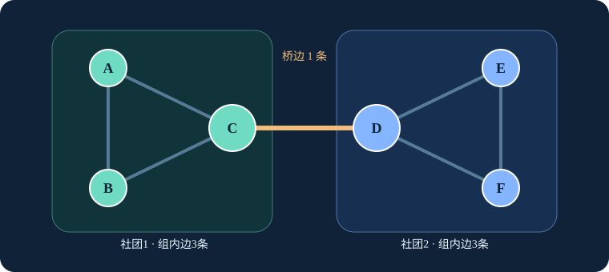

COMMUNITY DETECTION / MODULARITY & STRUCTURAL GROUPS
怎样从网络结构本身发现内部紧密的群体？
什么样的分组才算“社团”？
社交网络里，学校同学、工作伙伴、兴趣社群常形成相对密集的群体。但社团不是预先贴好的标签：如果只看一张图，算法需要从节点间的边推测分组，且不同目标函数可能得到不同答案。

模块度：与“随机接线”基线比较
如果一组节点有很多内部边，我们还需问：这种稠密程度是否只是因为它们的度数高？模块度 Q 用保持期望度数的配置模型作为零假设，将观察到的组内边比例和预期比例相减。
对每个社团 C，l_C 是组内边数，d_C 是该组所有节点的度数之和，m 是全图边数。图中两组各 l_C=3、d_C=7、m=7，因此：
Q = 2 × [3/7 − (7/14)²] = 5/14 ≈ 0.357143。 若把全部六个节点作为同一社团，Q=0。这个比较只说明两组方案在此目标函数下优于全组方案，不能证明两社团就是唯一真实答案。
亲手比较两种分法
同一张图，不同分区的 Q
每组内部 3 条边、总度数 7，Q=5/14。只对这张固定的 7 边图有效。
即使 Q 更大，算法也可能受到随机初始顺序、分辨率参数与近似优化的影响。在不同图或不同种子上，需要报告分组稳定性而不是只展示一张最漂亮的可视化。
两种经典路径：切边与局部移动
- Girvan–Newman：分裂。计算边介数，逐步移除当前承担大量最短路径的边，并在每轮重新计算。桥 C—D 是本例自然的候选边。它便于理解层次分裂，但大图计算成本较高。
- Louvain：聚合。初始化时每节点自成一组；局部移动节点以增加模块度，再把当前社团压缩为超级节点，重复优化。它是启发式算法，未保证全局最优，也不保证每个输出社团内部都良好连通。
- Leiden：改进连接性。Leiden 在 Louvain 基础上加入细化过程，可以改善不良连通社团，但本章示例代码调用的是 NetworkX 中的 Louvain，不把二者混为同一实现。
为什么模块度会漏掉小社团？
模块度使用全局随机基线。随着网络规模扩大，某些真实密集的小团体可能在优化过程中被合并，这就是分辨率限制的一种表现。改变 resolution 参数有助于检查尺度敏感性，但不能无代价地自动恢复所有“真实”社团。
此外，节点可能同时属于研究团队与朋友群；标准不重叠分区强制每个节点只分到一个社团，无法天然表达这种重叠关系。第 11 章会进一步讨论重叠社区与信息论方法。
复核一个可以手算的模块度
环境：Python 3.11+、NetworkX 3.3+。代码显式给出两社团分区，再分别计算模块度和 Louvain 近似解。
import networkx as nx
graph = nx.Graph([(0, 1), (1, 2), (2, 0),
(2, 3), (3, 4), (4, 5), (5, 3)])
partition = [{0, 1, 2}, {3, 4, 5}]
q_two = nx.community.modularity(graph, partition)
q_all = nx.community.modularity(graph, [set(graph)])
assert abs(q_two - 5 / 14) < 1e-12
assert abs(q_all) < 1e-12
estimated = nx.community.louvain_communities(graph, seed=42)
assert set().union(*estimated) == set(graph)
assert sum(len(s) for s in estimated) == len(graph)
print("manual partition Q:", q_two)
print("Louvain partition:", estimated)验证社团发现算法时，应同时记录分区数量、模块度、节点覆盖、不同随机种子的稳定性和业务含义。模块度不是外部真值标签的替代品。
原始资料与技术参考
- Newman & Girvan (2004), Finding and Evaluating Community Structure in Networks。
- Blondel et al. (2008), Fast Unfolding of Communities in Large Networks。
- Fortunato & Barthélemy (2007), Resolution Limit in Community Detection。
- Traag, Waltman & van Eck (2019), From Louvain to Leiden，以及 NetworkX Louvain API。
下一篇将比较重叠社团、信息论划分与核心—边缘结构，不预设所有群体都有清晰边界。